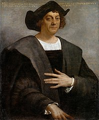

Krzysztof Kolumb

Krzysztof Kolumb (1451-1506), włoski żeglarz z hiszpańskim poparciem,
to postać kluczowa dla historii odkryć geograficznych. W 1492 roku,
pod patronatem Królowej Izabeli I i Króla Ferdynanda II, Kolumb wyruszył w podróż na zachód,
w poszukiwaniu nowej drogi do Indii. Nieświadomy istnienia Ameryki, dotarł do wyspy San Salvador,
uważając, że odkrył Indie. Choć nie osiągnął pierwotnego celu, jego wyprawy otworzyły erę wielkich odkryć,
rewolucjonizując światową geografię. Mimo kontrowersji związanych z kolonializmem i wpływem na społeczności tubylcze,
Kolumb stał się symbolem odwagi i przedsiębiorczości morskiej. Jego podróże miały globalne konsekwencje, wpływając na kulturę,
ekonomię i geopolitykę. Niemniej jednak, dzisiejsze spojrzenie na jego dziedzictwo uwzględnia także negatywne aspekty, związane z konsekwencjami kolonializmu dla rdzennej ludności Ameryk. Kolumb jest postacią złożoną,
która pomimo swojej doniosłości budzi również dyskusje i refleksje nad etycznymi aspektami jego działań.
Powrót do góry
Ferdynand Magellan

Ferdynand Magellan (1480-1521), portugalski odkrywca, kierował jedną z najbardziej epickich podróży morskich w historii.
Jego ekspedycja w latach 1519-1522 była pierwszą, która kompletnie opłynęła ziemię, dowodząc kulistości Ziemi. Mimo że Magellan zginął w trakcie wyprawy na Filipinach, jego flota kontynuowała podróż,
dowodzona przez Juana Sebastiána Elcano, i zakończyła pierwsze opłynięcie globu. To wydarzenie miało ogromny wpływ na nawigację i zrozumienie geografii. Magellan był pionierem w poszukiwaniu szlaku morskiego do Wysp Korzennych,
co miało znaczący wpływ na przyszłą wymianę handlową między Europą a Azją. Jego wyprawa otworzyła nowe horyzonty dla eksploracji morskiej, choć również niosła za sobą liczne wyzwania i trudności.
Magellan zasłynął jako odważny podróżnik, który przyczynił się do zrewolucjonizowania postrzegania globu i jego możliwości.
Powrót do góry
Vasco da Gama

Vasco da Gama (ok. 1469–1524), portugalski żeglarz, przewodniczył wyprawie, która w 1498 roku odniosła historyczny sukces, otwierając morską trasę do Indii. Zainicjowana przez króla Manuela I, podróż miała na celu nawiązanie bezpośrednich kontaktów handlowych z Indiami,
omijając dotychczasowe szlaki lądowe i morskie kontrolowane przez Arabów. Da Gama pokonał Przylądek Dobrej Nadziei, osiągając Indie, co umocniło pozycję Portugalii jako potęgi morskiej. Po powrocie w 1499 roku, odbył drugą wyprawę, a w 1502–1503 dowodził kolejną, potwierdzając portugalską dominację nad handlem morskim w regionie.
Jego sukces przyczynił się do umocnienia wpływów Portugalii w Azji, przynosząc korzyści gospodarcze i wprowadzając nowe szlaki handlowe.
Da Gama odegrał kluczową rolę w historii odkryć geograficznych, a jego podróże miały wpływ na kształtowanie ówczesnego świata i handlu międzynarodowego.
Powrót do góry
Amerigo Vespucci

Amerigo Vespucci (1454-1512), włoski podróżnik, odegrał ważną rolę w badaniu nowo odkrywanych lądów w Ameryce.
Po kilku podróżach w latach 1499-1502 Vespucci zaczął sugerować, że odkrył nowy kontynent, a nie tylko przedłużenie Azji,
co wcześniej sugerowano. Jego relacje, opisujące nowe lądy jako osobne od Azji, przyczyniły się do nadania imienia Ameryce.
Chociaż to kontrowersyjne, Vespucci stał się postacią kluczową w historii geografii i nazewnictwa. Jego wkład w zrozumienie kształtu nowo odkrytego świata jest niezaprzeczalny,
choć sam fakt nadania imienia kontynentowi budziło i nadal budzi pewne kontrowersje.
Powrót do góry
James Cook

James Cook (1728-1779) był brytyjskim kapitanem i wybitnym odkrywcą,
którego trzy podróże morskie w XVIII wieku miały ogromny wpływ na światową geografię i badania naukowe.
Podczas pierwszej podróży w latach 1768-1771, Cook dokładnie zmapował Nową Zelandię i wschodnie wybrzeża Australii,
dostarczając cennych danych naukowych. W trakcie drugiej ekspedycji (1772-1775) badał obszary Pacyfiku,
odkrywając Wyspy Sandwich (obecnie Hawaje) i Alaskę. Trzecia podróż (1776-1779) skoncentrowała się na północno-zachodnich w
ybrzeżach Ameryki Północnej, gdzie Cook próbował znaleźć Przejście Północno-Zachodnie. Niestety, zginął na Hawajach w wyniku konfliktu z miejscową ludnością.
Cook był nie tylko doskonałym nawigatorem i kartografem, ale również przykładem nowoczesnego dowódcy morskiego, dbającego o zdrowie i dobre warunki załogi. Jego prace zrewolucjonizowały wiedzę o geografii i kulturze obszarów Pacyfiku, a dziedzictwo jego odkryć jest istotne dla historii nawigacji i nauk geograficznych.
Powrót do góry
John Cabot

John Cabot, również znany jako Giovanni Caboto (ok. 1450 - ok. 1499), był włosko-angielskim odkrywcą,
który w 1497 roku podjął ważną podróż morską w służbie króla Henryka VII Angielskiego.
Cabot kierował się w stronę zachodnich wybrzeży Nowego Świata, docierając prawdopodobnie do wybrzeża dzisiejszej Nowej Fundlandii lub Labradoru.
Chociaż dokładne trasy jego podróży są kwestionowane, to uważa się, że był jednym z pierwszych Europejczyków, którzy dotarli do Ameryki Północnej od czasów wikingów.
Jego odkrycia miały wpływ na późniejsze badania i eksploracje tego regionu. Niestety, losy Cabota pozostają tajemnicą, a wiele informacji na jego temat zostało utracone w związku z brakiem dokładnych dokumentów.
Pomimo tego, Cabot jest uznawany za jednego z ważnych odkrywców, którzy przyczynili się do eksploracji i zrozumienia geografii Ameryki Północnej w przeddzień epoki wielkich odkryć.
Powrót do góry